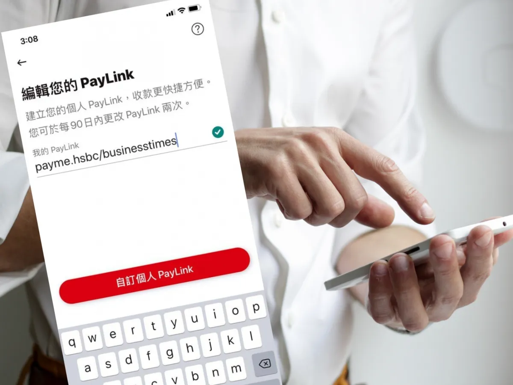

Fun Fact 1
Payme Link
PayMe, as a popular electronic wallet software in Hong Kong, is favored by young people for its user-friendly features. Many people use PayMe to send red packets or good wishes to friends during festivals. However, with the emergence of fraud cases in recent years, the security risks of PayMe have come to light.
A netizen wanted to use PayMe to make a payment to a friend. Typically, when the friend clicks the payment link, it opens in the PayMe app on their phone, and the transaction is completed. However, this netizen accidentally sent the Paylink link to a WhatsApp group. Since this link did not point to a specific user, if other group members clicked the link, they would also receive the payment immediately.
To address this security issue, PayMe launched a unique link feature, allowing the recipient to set up their own personalized payment link within the app. This way, when the payer clicks the link, they can only make the payment to the specified recipient, significantly reducing the risk of erroneous transfers and effectively protecting the recipient's personal interests.
Fun Fact 2
Screenshot Restrictions in Hong Kong's Electronic Banking Applications
The recent incident regarding screenshot restrictions in Hong Kong's electronic banking applications has sparked significant discussion, particularly concerning the differences between iOS and Android platforms. Major banks, such as HSBC Hong Kong and the Bank of China, have implemented policies that prohibit Android users from taking screenshots within their apps.
The primary concern driving this decision is the inherent security vulnerabilities associated with Android applications, which make it challenging to safeguard sensitive information like passwords and transaction records. This inability to effectively prevent screenshots raises the risk of identity theft and unauthorized access to personal data.
In contrast, iPhone applications are perceived as more secure, leading to a disparity in user experience across different devices. By restricting screenshots, banks aim to enhance user data protection and underscore the importance of cybersecurity in today’s digital landscape. This move highlights the ongoing efforts to secure financial transactions and maintain user trust in electronic banking services.
Fun Fact 3
[Discuss the fun fact.]
References
Is iPhone more secure? Two major banks' Android Apps ban screenshots